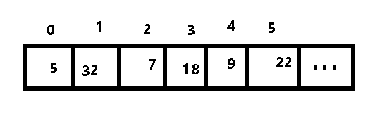

差一错误
写在前面：
刚开始学习编程，我就接触到了数组(array)。
数组一直有个让我很疑惑的点。
当我们需要取数组中一个特定的元素时，我们可以很方便的使用下标引索它。例如：
1 | |
仔细观察代码，发现当我们要赋值第一个元素的值的时候，其下标为0。
为什么不是1，而是反直觉的0呢？从 1 开始不是更符合人类的思维习惯吗？
这句话倏地出现在刚开始学习编程的我的脑子里。
为什么不是“1”？
首先我们要研究数组这个东西。
数组在内存中是连续存储的。不妨试试以下代码：
1 | |
结果如下：
1 | |
int类型的数组中，每个元素占4个字节，而我们做一次减法：
连续存储在数组上体现的淋漓尽致，一个元素紧挨着下一个元素。

我们叫这种下标为“0-based”，也称0索引。
每个元素的地址可以通过基地址偏移计算得到：
元素地址 = 数组首地址 + 下标 × 元素大小
- 如果下标从 0 开始：
第一个元素地址 = 首地址 + 0 × 元素大小 = 首地址本身
第二个元素地址 = 首地址 + 1 × 元素大小
…
使用下标0，计算更直接，无需额外减法。 - 如果下标从 1 开始：
第一个元素地址 = 首地址 + (1-1) × 元素大小 = 首地址
第二个元素地址 = 首地址 + (2-1) × 元素大小
…
使用下标1，每次都要多一次减法运算
而早期计算机性能有限，这种开销不可忽视。
C 语言之父-Dennis Ritchie 在设计数组下标时，明确考虑到底层效率：
“数组下标从 0 开始，使得
a[i]的地址计算简化为地址 = 基址 + i×元素大小，省去减法步骤。”
——《C 语言发展史》
（Dennis Ritchie）
减法操作在当时会显著影响性能。
早期 CPU没有直接支持减法的指令，需用加法模拟减法：
这需要 额外 2-3 个时钟周期。
早期编译器还不会自动优化 (i-1) 这类表达式，程序员需手动编写汇编，多一条指令就是多一份开销。
早期计算机的减法开销，是 硬件局限性与软件工具落后 共同作用的结果。
由此我们知晓了，下标取首元素从0开始的历史渊源。
那为什么今天仍坚持 0索引(0-based)？
尽管硬件已进步，但 0索引(0-based )仍被保留。
- 历史习惯：现有代码和生态的兼容性。
- 指针算术一致性：
arr[i]始终等价于*(arr + i)。 - 半开区间优势：
[0, n)表示范围更数学化（类似数学中的左闭右开区间）。
这种限制塑造了编程语言的设计哲学，而今天的0索引数组下标，正是那个**“锱铢必较”**时代的遗产。
0-based虽然大放异彩，但也带来了“差一错误”(Off-by-one Error)
什么是差一错误(Off-by-one Error)？
差一错误指在循环或边界条件中，因计数偏差导致的错误：
- 多循环一次或少循环一次（如
i <= n误写为i < n或反之） - 数组越界（如访问
arr[n]而有效下标是0到n-1）
遍历数组
假设有一堆物品，按m到n（含）依次编号。那么这堆物品的总数是多少？
我们可能会直觉地认为有(n-m)个物品，但这就和正确答案差了一，犯了栅栏错误。正确答案应该是(n-m+ 1)个物品。
——《科普中国》
e.g:
1 | |
我们发现，for loop循环了 n+1 次，导致越界访问 arr[n]。
这就是一个典型的差异错误。
循环结束条件应该是i<n，而非i<=n。
i<=n会导致循环在最后访问了arr[n]，但是数组中只有 0 到 n-1的元素下标可以使用，导致了越界访问。
人类习惯从 1 开始计数，但代码从 0 开始，容易混淆**“第几个元素”和“下标值”**。
我们可能会想访问第 5 个元素，可能误写 arr[5]（实际为第 6 个元素）。
人们如何解决这个问题？
1.优先使用“半开区间”写法
1 | |
除非逻辑明确需要包含终点，避免混用 <= 和 <。
2.工具与自动化检查（注：来源于网络）
（1）静态分析工具
- 编译器警告：开启
-Wall -Wextra（GCC/Clang）检测可疑循环。 - Linter：ESLint（JavaScript）、Pylint（Python）等可标记潜在越界。
（2）运行时检查
数组边界检查（如 Java 的
ArrayIndexOutOfBoundsException）。自定义安全容器：
1
2
3
4
5
6class SafeArray {
int& operator[](size_t i) {
if (i >= size) throw OutOfBounds();
return data[i];
}
};
3.语言特性规避
使用迭代器而非下标：
1 | |
注意：这是C++11的for循环的新用法
4.哨兵值（Sentinels）
在边界处预置特殊值，避免越界：
1 | |
（当然我感觉这样的方式占用了一点内存空间，且增加了熵，个人不推荐使用。）
| 方法 | 适用场景 | 效果 |
|---|---|---|
| 半开区间循环 | 遍历数组、字符串 | 减少边界混淆 |
| 哨兵值 | 搜索、排序算法 | 避免复杂边界条件判断 |
| 静态分析工具 | 所有语言 | 工具提前发现潜在问题 |
| 迭代器/函数式编程 | 现代语言 | 彻底规避下标操作 |
结语：
“编程时，明确每一行代码的边界含义，比写出‘聪明’的代码更重要。”
—— 《代码大全》
0-based 下标是计算机底层效率与数学简洁性的产物，虽可能诱发差一错误，但通过规范写法可有效规避。
差一错误的根源更多是编程时程序员对“边界”的模糊认知，而非下标设计本身。
它不是你的错，但解决它是你的责任。